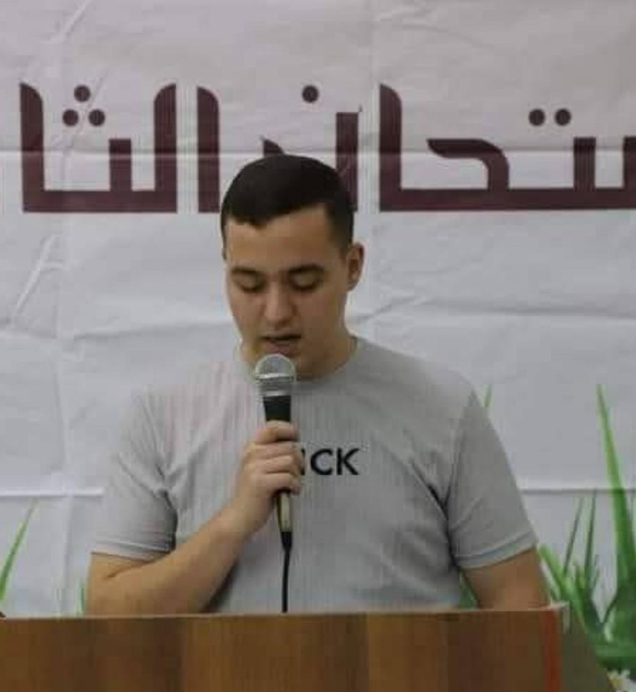
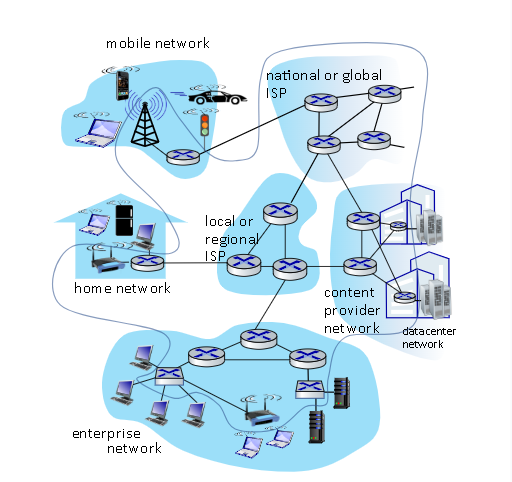

| الاسم الكامل | رقم الطالب | الصورة | عدد الساعات المنجزة | الهوايات |
|---|---|---|---|---|
| الياس ناجح حمود | 1230892 | 63 | برمجة, صيانة التلفونات | |
| محيي الدين نائل برغوثي | 1230256 |  | 83 | برمجة, سباحة |
| امجد قاهر عادي | 1230800 | 84 | برمجة, كرة قدم |
أنا إلياس ناجح حمود، طالب في السنة الثالثة بتخصص علوم الحاسوب. أمتلك خبرة قوية في عدة لغات برمجة مثل C, C++, Java، ومعرفة متينة في البرمجة كائنية التوجه (OOP)، إضافةً إلى هياكل البيانات وقواعد البيانات مثل MySQL. لدي شغف كبير في حل مسائل Problem Solving والتفكير الخوارزمي. من المشاريع التي عملت عليها: مشاريع هياكل بيانات في الجامعة مثل برنامج تواصل مصغر. مشاريع قواعد بيانات لشركة استيراد وتصدير.
أنا أمجد قاهر، أمتلك خبرة عملية في لغات البرمجة C، Java، HTML، CSS، وArduino، مدعومة بأساس متين في البرمجة كائنية التوجه وهياكل البيانات والخوارزميات. أُصنَّف ضمن أصحاب أعلى المعدلات في كلية تكنولوجيا المعلومات على مدار أربعة فصول متتالية، وأحرزت مراكز متقدمة في مسابقات محلية لحل المشكلات. تشمل خبرتي تطوير مواقع إلكترونية متجاوبة، وأنظمة لإدارة المهام وتخطيط المسارات، إضافة إلى تصميم نظام ذكي لإدارة بوابة مواقف السيارات باستخدام Arduino.
أنا محي الدين عيص، طالب في السنة الثالثة في هندسة الحاسوب، أمتلك خبرة قوية في لغات البرمجة C، C++، Java، Python، GDscript، SystemVerilog، Shell scripting، ARM Assembly، وDjango، مدعومة بمعرفة متينة في البرمجة كائنية التوجه (OOP)، هياكل البيانات، وأنظمة لينكس. من مشاريعي PlayingWithChemistry، وهو مشروع أردوينو يعتمد على شاشة LCD لطرح أسئلة تفاعلية حول العناصر الكيميائية، إضافة إلى دائرة صغيرة للتحكم في اتجاه المحرك، وكذلك تصميم وتنفيذ وحدة المعالجة المركزية MANTA-32 المبنية على معمارية تعليمات (ISA) من تصميمي، بالإضافة إلى برمجة لعبة الديناصور الخاصة بجوجل على شاشة LCD باستخدام الأردوينو.
هذه الصورة تشرح عن ان الانترنت عبارة عن شبكة معقدة من الشبكات حيث ان هناك مليارات الاجهزة متصلة مع بعضها البعض نرى في الصورة ان الاجزاء الطرفية هي عبارة عن الاجهزة التي يمكنها الوصول الى الانترتت ويتم تمرير البيانات عن طريق حزم باستخدام الراوترات تنقل هذه البيانات عبر وسائط مختلفة مثل الياف ضوئية او كوابل او الاشارات اللاسلكية وتدار هذه الشبكات من قبل مزودي الشبكات وتشكل معا البنية العالمية للانترنت
